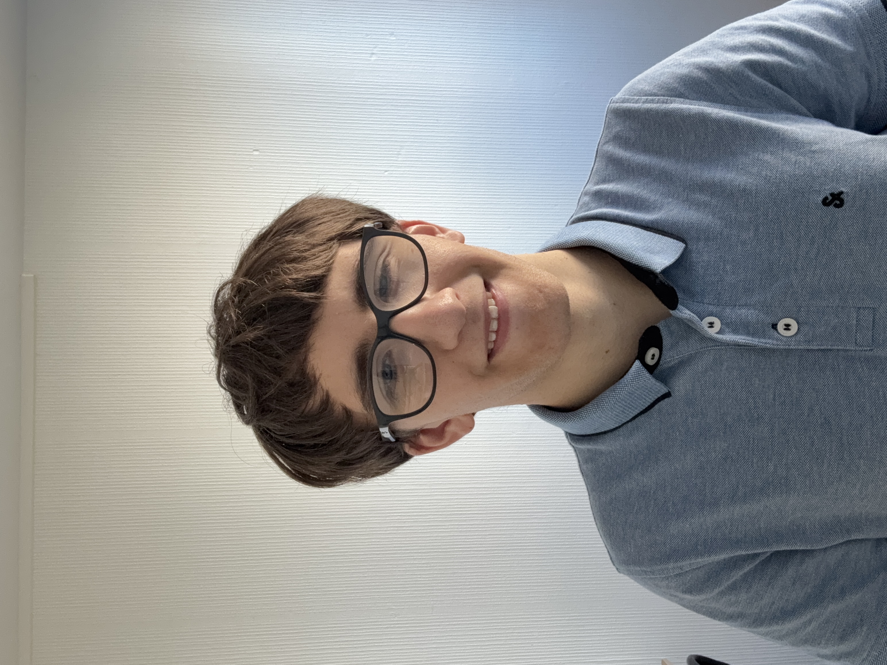

Hello! My name is Adam Chausson-Vergne and I am a first-year student at ENSEEIHT school. I am currently studying electronic, electrical and automative control engineering. I invite you to discover my background, skills, and achievements through this e-portfolio. Use the navigation above or explore the sections below.

Status: 1st-year Engineering Student at ENSEEIHT
Specialization: EEEA (Electronics & Automatic Control)
Career Goal: Embedded Systems in Aeronautics
Location: Toulouse, France
At ENSEEIHT, I am a student of the EEEA department (Electronics, Electrical Energy, and Automation). This three-year curriculum provides a comprehensive base in modern hardware and software engineering.
The first semester program focuses on 6 main subjects:
Through practical laboratory sessions and projects, I am developing a strong skills in hardware design and programming, and it will help me gain experience for embedded systems field.
During my preparatory classes, we had to work on a project of our choice. This is the TIPE ("Travaux d'Initiative Personnel Encadrée" or "Supervised Personal Initiative Project"). I worked on a constellation recognition algorithm. Specifically, this program takes as input a photograph of the sky showing constellations. It identifies the specific pattern formed by the stars that make up the constellation. Then it compares this pattern with a database that associates each constellation visible in the northern hemisphere with its corresponding pattern. By comparison, the program deduces the name of the constellation. This type of algorithm is used in "star trackers", that are orientation sensors carried by some satellites. Indeed, by observing constellations, we can determine their orientation, which enables to locate and navigate the satellite. This method is used in conplement with other, more precise sensors such as triangulation. I had to measure the algorithm's success rate. So I measured this rate through simulation and then experimentally. The simulation used only the coordinates of fictitious stars on a 2D photograph, and I obtained a detection rate of 85%. Experimentally, using real photographs of the sky, I obtained a lower rate of 67%. This project improved my coding abilities. I also discovered the resaerching process beacuse I did all the steps from the choice of the topic to the result validation.
I am a member of the ENSEEIHT robotics club. The club will compete in the 2027 French Robotic Cup this summer. Our team's robot will face against an other team's robot in an arena, and they will do different tasks in order to earn points. This year, the theme is about "Kaamelott", so the robot will need to build a castle by picking and stacking cardboard boxes. I will be part of the team that build the secondary robot that accompany the main robot. Currently, I have mostly done training course on Solidwork and Arduino.
| Fields | Skills | Tools and Software |
|---|---|---|
| Electronics | Analog Electronics Signal Processing Circuits and Components | Latis Pro software Oscilloscope |
| Automation and Energy | Dynamic Systems, feedback systems Energy Conversion | MATLAB Simulink |
| Computer Science | Algorithms Digital Logic | Python C |
| Design and conception | 3D Modeling | SolidWorks |
During the second semester of my second year at ENSEEIHT, I am planning to study abroad for a semester. I went to the "International day", an event organised at my engineering school. Second and third year ENSEEIHT students who have already done their mobility went to present their experience of their semester abroad. Some foreign students who did their mobility at ENSEEIHT also presented their school too. I learned the different universities that take international students and it was a great opportunity to exchange. Here are three targeted universities, ranked in order of preference:
Canada has a thriving tech ecosystem, and ETS is renowned for its practical approach to engineering. Their specialized electronics curriculum would perfectly complement my N7 background in systems. They propose plenty of practical projects that would prepare me for my final engineering internship.
KIT is well known for automation and embedded systems. Studying there would allow me to gain experience on embedded systems, and discover german culture. It will also be a great opportunity to practice and improve my German skills, learned during high school.
UC3M offers courses on electronics and embedded systems that match my interests. I started learning spanish at N7 and I have a beginner level in Spanish. This university have a bilingual English-Spanish study program that would help me better understand the lectures.
During my first year at ENSEEIHT, I attended an interactive play titled "The Trial of King Kong", which addresses sexist and sexual violence. The actors performed three scenes, followed by a debate moderated by a judge to evaluate the situations presented. The play raised my awareness regarding these violences.
I also had the opportunity to take part in the "Climate Fresk", a workshop designed to raise awareness about climate change. Working in groups, we read and placed cards containing definitions of words about human activities and their environmental footprint. This helped me to better understand the human impact on the environment. In fact, I believe it is crucial for an engineer to be aware of these issues in order to develop solutions to fight global warming. In addition, I took part in a "clean walk", where I collected litter laying on the streets surrounding the ENSEEIHT campus.
Finally, I participated in the "Futur Proche" festival. This is several events organized jointly by various engineering schools in Toulouse to raise student awareness about the different challenges and implications of the engineering profession. I attended two activities. The first activity was a lecture about AI, which explored the impacts of chatbots on the society and the environment. The second one was a workshop on ethics in engineering, where we examined concepts such as ethics, morality, and professional codes of conduct through various examples.
I really love music. I have played piano for 10 years. I have mostly played classical music but currently, I am learning film music and also jazz. I gave several short concerts in front of the music school. Playing piano has helped me being multi-task, because I need to play and read the musical score at the same time. It also helped me become more resilient because learning a difficult musical piece requires a lot a patience and can be frustrating when I don't succeed in playing it well.
I practised swimming at a club for years, but I stopped when I went to preparatory classes. I'm starting swimming again and I have set myself the goal to do 2000 meters (40 round-trips) in under 1 hour.
At the end of their first year, ENSEEIHT students complete a 6-week "blue-collar" industrial internship (in any company). This summer, I am looking for working in retail or support roles (such as supermarket employee, Amazon logistics assistant, or restaurant service) to gain professional teamwork experience.
If you have any questions or wish to discuss professional opportunities, feel free to reach out:
📧 Email: achaugne@laposte.net
📞 Phone: +33 6 66 54 97 78
💼 LinkedIn: View my LinkedIn Profile